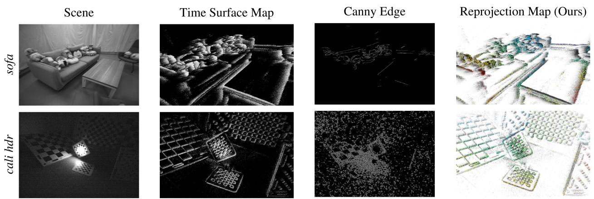

阶段 H · 专题支线（动态 / 语义 / 多机 / 事件）/ Lesson 0175
事件相机是什么：先把物理机理讲清
前七季的相机都在「每隔 1/30 秒拍一张完整照片」。这一块换了一种相机：它不拍照，只报告「哪个像素刚刚变了」。🔬 这节课不读新论文，只把机理讲透——不然后面三节课一步都走不动。
🎯 主题：事件相机的输出、触发条件、极性与它天生的短板
👥 作者：概念课（无新论文；机理依据来自本块 11 篇论文的开篇机理段）
📅 年份 · 铺垫课，为 0176–0178 作准备
本节目标 读完你应该能：用自己的话说清事件相机输出的到底是什么（不是图像，是一串四元组）；解释「对数亮度 + 对比度阈值」这条触发规则，并指出它为什么意味着「相机不知道现在多亮」；分出正事件与负事件；说明为什么它没有运动模糊、却又在静止时什么都不输出；讲清这套特性让哪些前七季的老工具直接失效；最后说准它的优势只在哪三种场景里兑现。
和前面课程怎么接 ★ 最直接的一笔债要还给 第三季 0048 DSO ：DSO 的核心是「光度误差」——同一个三维点投影到两帧，像素亮度应该一样 。事件相机根本没有绝对亮度，这一条前提当场作废，所以本块的每一篇都要换一个完全不同的优化目标。★ 特征描述子也不能用了：第三季 0043 ORB-SLAM 的 ORB 描述子靠的是邻域像素的亮度对比模式，事件流里没有「邻域像素亮度」这个东西。★ 「跟踪与建图分家」的架构回链 0042 PTAM ——0176 的 EVO 正是 PTAM 式的并行跟踪与建图。★ 本块还会反复撞上 0040 导览的「尺度暗线六站」 ：纯事件单目连尺度都拿不到，得靠双目或 IMU 补。★ 与 第四季 0084 FAST-LIO2 「干脆不提取特征」是同一类困境的两个版本：都是被传感器逼着换表示。
1. 先说人话：一台「只报告变化」的相机
我们平常熟悉的相机，本质上是曝光 ：快门一开，每个像素在这个时间段里把光攒起来，时间到了就报一个亮度值。整张图同时开始、同时结束，所以它给你的是「这一瞬间，每个像素有多亮」。你手机拍出来的照片、前面七季讲的 ORB-SLAM、DSO、VINS 用的都是这种「快门式」的相机。
事件相机（event camera）完全换了一种工作方式。它不曝光 ，也不输出亮度值。它的每个像素是一个独立的、一直盯着自己那一小片光的小电路：只要这片光的亮度变化超过了设定阈值，它立刻发一条消息出去。 这条消息里只有三样东西加一个符号——「位置 （哪个像素）、时刻 （精确到微秒）、方向 （是变亮还是变暗）」。这就叫一个事件 。
打个生活里的比方：常规相机像一个摄影师每隔 1/30 秒给整个房间拍一张合影；事件相机则像在房间里每个位置都装了一个门铃 ——只有那里发生了「变化」才会响，而且响了会记下「哪个铃、几点响的、是有人进门（变亮）还是出门（变暗）」。平时没人动，铃一个都不响。
这个比方里最要紧的一句是：门铃只报告「有变化」，从不报告「现在屋里有多少人」。 这就是事件相机后面所有优点和所有麻烦的源头。
同一个房间、同一时刻：一边给「一整张照片」，一边给「一串点」
左边每个像素都在读数；右边只在「刚刚变化过」的地方留下痕迹
常规相机：一整张完整照片
每个像素都给出一个亮度值，连没变的墙也有数
数据量 = 分辨率 × 帧率，跟「动没动」无关
事件相机：只有变化的地方在闪
(x, y, t, 极性)
静止的墙面一个点都没有，输出的只有边缘在变的地方
数据量取决于「场景动了多少」，而不是分辨率
要记住：事件相机的输出不是「一张图」，而是「一串带时间戳的变化记录」
这张图在画什么： 同一个房间、同一时刻的两套输出。左边是常规相机：桌子、椅子、窗框、连那面空墙，每个像素都给出一个亮度值。右边是事件相机：同一间屋子被画成深色轮廓，只有「刚刚变化过」的地方冒出彩色小点——窗框边（绿）、桌沿（红）、几个零星位置（黄）。怎么看这张图： ① 先对比两边「点」的数量：左边是满的，右边是稀疏的；② 再注意右边那些点只落在物体的边缘上 ，因为只有边缘扫过像素时亮度才会剧烈变化；③ 那面空的墙、桌子的平整表面，右边完全是空的——这正是它省数据的原因，也是它丢信息的原因；④ 右上角引出的那行小字就是每个事件带的四样东西：位置 (x, y)、时刻 t、极性。要记住的一句话： 常规相机记录「亮度」，事件相机记录「亮度的变化」——差一个字，后面所有的算法都得重写。
2. 事件到底是什么：一个四元组，一堆异步的笔
把上一步说得更精确一点。一个事件写成
这句话在说什么： ① 这个式子只是在说「一个事件长什么样」——四个数，没有第五个；② 为什么就这四个就够了——因为事件相机只检测变化，不测量亮度 ，它能知道的全部信息就是「哪儿、什么时候、往哪个方向变了」；③ 这里的 $t_k$ 是真实时间戳 ，精度是微秒级（常规相机的一帧要 33 毫秒，也就是 33000 微秒），这是它快得离谱的根本原因。
这里有一个新手最容易忽略的点：像素之间是完全独立、完全异步的 。常规相机的所有像素被同一个快门「统一指挥」，整张图是一个整体；事件相机的每个像素是自己管自己，看到自己的光变了就自己发一条消息，不需要等别人 。所以事件流的顺序不是「一帧一帧」，而是一条按时间排好的流水账——第 1 个事件、第 2 个事件……中间还可能有很多像素在同一微秒里同时发言。
这种「异步」带来两个直接后果，本块每篇论文都要跟它们打交道：
好处：没有帧的束缚 时间分辨率由电路决定（微秒级），而不是由帧率决定。转得再快，只要亮度在变，事件就一直在产生。
麻烦：没有「一帧」这个概念 所有经典算法都要「一张图」当输入。所以本块的每一篇，第一步都得先把这串流水账攒成某种图 （0176 会专门讲这件事）。
原图注（Fig. 3）： Event Representation. Left: Output of an event camera when viewing a rotating dot. Right: Time-surface map (1) at time t, T(x,t), which essentially measures how far in time (with respect to t) the last event spiked at each pixel x = (u, v). The brighter the color, the more recently the event was triggered. Figure adapted from [46].（中译：事件表示。左：事件相机看一个转动的点时的输出。右：时刻 t 的时间表面图，它度量的是每个像素「上一次触发事件」距现在有多久；颜色越亮表示触发得越近。）怎么看这张图： 这是本块最有教学价值的一张原图，0176 会正式展开它 ，这里先建立直觉。左图一个黑底上转动的白点，事件相机给出的不是点的形状，而是点扫过时留下的一条条短划线——每一笔都是「这个像素刚刚变亮/变暗」 。右图是把「每个像素上次变化有多久以前」画成灰度：刚变过的亮、很久没变的暗。要记住的一句话： 事件流本身没法直接看，但把它按「上次变化的时间」铺开，就能看出物体的轮廓——这就叫时间表面 ，是本块几乎所有方法的共同底座。
3. 触发条件：对数亮度 + 对比度阈值
那么「变化超过阈值」里的「变化」具体怎么算？答案不是「亮度差了多少」，而是亮度的比例变化了多少 。论文里的写法是（EventTracking 式 (1)、PL-EVIO 式 (1) 用的是同一套）：
这句话在说什么： ① 这个式子算的是「这个像素的亮度，按比例 算变了多少」——取对数之后相减，等于算 $I(t_k)/I(t_k-\Delta t)$ 的对数，所以它关心的永远是「1.04 倍」这种相对量；② 为什么用对数而不是直接用差值——因为人眼和传感器对亮度的感受本来就是「成比例」的：从 50 变到 52 和从 200 变到 208，感觉上一样明显；③ 阈值 $C_{th}$ 什么时候把变化当回事——只有对数增量跨过 ±C_th 才发事件，没跨过的一律不发 ，所以一条极其平缓的光照渐变可能一个事件都不产生。
现在来看这条规则最反直觉的地方：相机根本不知道现在「多亮」。 它只知道「变了，而且变的比例超过了阈值」。同样是「变亮了 4%」，在暗处和亮处各触发一个事件，这两个事件长得一模一样 ，相机分不出哪个来自暗处、哪个来自亮处。
这是本块所有麻烦的总源头：没有绝对亮度，就没有「这个像素应该是多少」这个说法 ，于是常规的直接法（比如 DSO 的光度误差）当场失去依据。
同一块墙，一个在暗处、一个在亮处：亮度都变了 4%，产生的是同一个事件
事件相机只比较「变化的比例」，从不记录「当前有多亮」
暗处的墙：亮度 50 → 52
50
52
亮度比 = 52 / 50 = 1.04
对数增量 = 0.039，跨过阈值
发 1 个正事件
实际中传感器噪声带来的「底噪事件」，也是这么来的
亮处的墙：亮度 200 → 208
200
208
亮度比 = 208 / 200 = 1.04
对数增量 = 0.039，同样跨过阈值
也发 1 个正事件
两个事件的数据完全一样，相机分不出谁在暗谁在亮
要记住：它只知道「变了多少比例」，不知道「原来有多亮」
这张图在画什么： 左边是暗处的墙，亮度从 50 变到 52（1.04 倍）；右边是亮处的墙，亮度从 200 变到 208（也是 1.04 倍）。两边都跨过了阈值，于是各自发出一个完全相同的正事件 。怎么看这张图： ① 先看两边的「亮度比」：都是 1.04，所以对数增量都是 0.039，触发条件一模一样；② 再看两边的输出：都是一个绿点，四元组里没有任何一个位置能放「我本来是 50 还是 200」；③ 于是「这个像素本来的亮度是多少」在事件相机里根本不存在 ——想恢复它，必须靠别的手段（后面 0177 里要讲的「用标准帧兜底」就是这么回事）。要记住的一句话： 事件是「相对量」的 detector：它衡量变化的比例，而不携带任何绝对亮度。这一点直接决定了本块所有优化目标都要换掉。
⚠️ 一处要如实说明的地方
很多通俗材料会写成「亮度 50→52 与 200→202 产生同样的事件」。严格按上面的公式，这个例子是不成立 的：$\ln(202/200)=0.0099$，只有 $50\to52$ 的 $0.0392$ 的四分之一，压根跨不过同一个阈值。要让两边的触发条件真的相同，必须是同样的比例 变化（1.04 倍），所以亮处的正确写法是 200 → 208 。本课按公式画图，就是为了避免把「它只知道变了、不知道多亮」这条正确直觉，建立在一个算错的例子上。
4. 极性：变亮是正事件，变暗是负事件
公式里的 $p_k$ 就是极性 （polarity），只有两个取值：
p = +1：正事件 这个像素「变亮了」——比如一块黑格被白格盖上来。本块论文的图里通常画成绿色或蓝色 的点。
p = −1：负事件 这个像素「变暗了」——比如一块白格被黑格盖上来。论文图里通常画成红色 的点。
极性这个信息非常有用，因为它天然带着对比度边缘的方向 ：一条「左边亮、右边暗」的边往右扫，会在扫过的像素上产生一批负事件；反过来往左扫，同一批像素产生的是正事件。所以极性可以在不知道亮度的前提下，告诉你「这边是什么方向从亮到暗」。需要注意的是 ：0176 里有一种方法（CMax 对比度最大化）干脆把极性丢掉不用，因为它只需要「这里有点东西」；而 ESVIO、PL-EVIO 这类方法则用极性当 mask 来分布特征点。极性有用但非必需。
另外一件要留个心眼的事：极性只说明「变化的方向」，不说明变化多大。 只要跨过阈值就记一笔，跨过阈值 10 倍也是一笔。所以你说不出「这块墙亮了 8% 还是亮了 80%」，只能说「它亮了」。
一个转动的黑白棋盘：谁被照亮就冒绿点，谁被遮暗就冒红点
棋盘本身没变，变的是它在画面上的位置——于是边缘扫过的地方全是事件
时刻 t：棋盘摆正
此时还没有任何事件：亮度各处都很稳定
时刻 t + Δt：棋盘转了一点点
● 绿 = 正事件（变亮）
● 红 = 负事件（变暗）
要记住：极性只说「往哪边变」，不说「变了多少」
这张图在画什么： 同一个黑白棋盘的两个时刻。左边棋盘摆正，一切稳定，一个事件都没有；右边棋盘转了一点点（这里用轻微旋转表示），于是每一个「格子边界扫过」的像素都发了一个事件——新露出来变亮的排绿点，被黑格盖住变暗的排红点。怎么看这张图： ① 先看左边：棋盘本身没动，所以一个事件都没有 ——这正是它省数据的原因；② 再看右边：事件不是均匀铺满的，而是成排地落在格子的边界上 ，每一条边界对应一串同极性的点；③ 对照两侧的极性：同一条界线上出现「一边绿、一边红」，这是因为黑格扫过去，前面的像素变暗、后面的像素变亮。要记住的一句话： 极性是事件四元组里唯一免费附送的方向信息，但它只回答「往哪边变」，不回答「变了多少」。
5. ★ 静止的时候，相机什么都不输出
这是整块里最反直觉、也最容易被新手误解的一点。请把上一条规则再读一遍：只有亮度变化超过阈值才发事件。 那么——如果场景完全静止，相机也完全不动呢？
答案是：一个事件都不发。 不是「发得少」，是「几乎为零」（只有电路噪声带来的零星底噪事件）。这与常规相机形成极端对照：常规相机在完全静止的房间里照样每秒老老实实拍 30 张完整照片，耗着电、占着带宽、存着一堆几乎一模一样的数据。
这件事有两面，必须同时说清：
它是优点 省数据、无冗余、几乎不耗电（CMax-SLAM 论文里给的数字是事件相机约 20 mW，常规相机约 1.5 W ）。一屋子人不动，它就几乎不产生任何数据——这对长期部署的机器人是巨大诱惑。
它是致命弱点 没有事件 = 没有信息。初始化是最先崩的一环 ：EVO 需要场景在传感器前方近似平面地持续运动数秒 才能 bootstrap 起来；ESVO 论文自己承认纯事件在静止时会失败；ESVIO 也把「静止退化」写成纯事件法（EVO / ESVO）在自己数据集上几乎全失败的原因。
换个说法：事件相机天生「依赖运动」。 它把「运动」当成了唯一的燃料。场景不动、相机不动，它就没有任何东西可算——连「我在哪儿」都无法确认，因为「我在哪儿」需要「我看到的东西」来回答，而静止时它什么都看不到。这就是为什么本块后面的每一篇系统，最后几乎都拖着一条尾巴：要么加标准帧，要么加 IMU，要么加深度 （0177 和 0178 讲的就是这条融合主线）。
同一台事件相机，同一间屋子：静止的桌子几乎不发音，挥动的手臂满屏都是
左边的人不动，右边的人挥手——事件相机对两者的「兴趣」天差地别
场景静止：几乎零事件
几秒里只有这几个点，还多半是电路噪声
没有事件 = 没有任何信息可以拿来定位
初始化会直接卡住：不知道自己在哪、往哪看
场景在动：事件多到连成片
手臂扫过的每一个像素都在报「我刚刚变了」
论文里报告的事件率可以到每秒百万量级
（EventTracking 提到事件率可达 1 M events/s 量级）
要记住：这一对图同时说明了它的最大优点与最致命弱点
信息量与「动了多少」绑定——不动，就没有信息
这张图在画什么： 左边是一个人坐在桌前不动的场景，几秒过去，画面里只有三个孤零零的淡蓝点（还多半来自电路底噪）；右边是同一个人挥动手臂，手臂扫过的轨迹上密密麻麻排满了绿点与红点。怎么看这张图： ① 先数左图的点数——只有 3 个，而且散落无序，它们提供不了任何关于场景结构的信息 ；② 再看右图：事件沿着手臂的运动轨迹成串分布，绿红相间，肉眼直接就能读出「这里有一只手在往右扫」；③ 把两张图并排看，就得到本课最重要的一句判断——它的信息量完全被「运动」驱动 ，这既是它省电省带宽的原因，也是它一静止就失明的根源。要记住的一句话： 静止时没有输出，是事件相机最反直觉的性质；它既是优点（无冗余），也是本块所有系统都要靠「帧 / IMU / 深度」来补的致命弱点。
6. 没有绝对亮度、没有完整图像，于是老工具全部作废
把前面几点合起来，就得到一条对整块课程都成立的结论：事件流既不是「一张图」，也不含「亮度值」，所以任何依赖这两个前提的工具都不能直接用。 下面把前七季里最常用的几件工具逐一对照。
前七季的老工具
它依赖什么前提
在事件流上为什么用不了
光度误差 （第三季 0048 DSO）同一个三维点投影到两帧，像素亮度应该相同 事件里根本没有「像素亮度」这个量，误差项写不出来。本块改用「事件与地图边缘对齐」或「对比度最大化」 特征描述子 （第三季 0043 ORB-SLAM）一块邻域里像素亮度的对比模式（梯度方向直方图） 没有邻域亮度图像，无法算梯度。本块改成在时间表面 上找角点（ESVIO / PL-EVIO） 光流 / 块匹配 （第三季 0050 SVO、第七季 0129–0132）两帧之间有可比的图像块 没有「帧」可比。本块先要造出中间表示（累积图 / 时间表面），再在上面做跟踪 绝对尺度 （第三季 0040 尺度暗线）单目靠运动视差或已知基线 纯事件单目同样拿不到尺度；本块靠双目基线 或 IMU 来定（0178 是主线）
所以本块的方法，可以在头脑里这样分两条腿：一条腿是「造中间表示」 ——把这串流水账攒成某种可以看的图（事件累积图、时间表面、warp 后的事件图）；另一条腿是「换优化目标」 ——不再比亮度，而是比「对齐得好不好」或者「攒出来的图够不够锐利」。0176 会专门讲清这两条腿。

原图注（Fig. 1）： Challenging scenarios and results. sofa is captured under high dynamics. cali hdr is a challenging illumination scene with highly self-similar texture. Column 1: Example RGB images. Column 2: Corresponding time-surface map. Column 3: Canny edge detections. Column 4: Reprojected depth points.（中译：挑战场景与结果。第 1 列是常规 RGB 图像；第 2 列是对应的时间表面图；第 3 列是 Canny 边缘检测结果；第 4 列是重投影的深度点。）怎么看这张图： 这张图把「同一场景的四种看法」并排放在一起，是理解本块最好的入口。第 1 列 是我们熟悉的完整照片；第 2 列 是事件攒出来的时间表面——你会发现它的「纹理」和照片里的边缘高度对应；第 3 列 是把这张时间表面当成一张灰度图去做 Canny，照样能提边缘。要特别留意第一行那个沙发：它是高速运动下拍的，RGB 照片已经糊了，但时间表面仍然给出清晰边缘 ——这就是事件相机最值钱的地方。要记住的一句话： 事件流的「形状」不在亮度里，而在「哪里刚变过」里；只要把它铺成时间表面，前七季的边缘类工具就能重新上岗。
7. 硬件名词与适用边界：别把它当成「万能替代品」
先清理几个会反复出现的硬件名词。它们不是同一层次的东西，混在一起很容易乱。
DVS（只出事件） 纯事件相机。每个像素只有「变化检测」这一条输出通路，不产生标准图像。EventTracking 用的 DVS 128×128 就是这类。
DAVIS（事件 + 标准帧同芯片） 同一块传感器上同时有事件像素和标准（APS）帧像素，一个器件同时给出事件流和照片 。本块大量论文用的是它（EVO / Ultimate SLAM / ESVIO / PL-EVIO 等），原因很实际：一张标准帧就能补上「静止时的空白」。
只有事件、没有帧的机型 比如 DVXplorer。行星机器人那篇论文明确说过：DVXplorer 没有帧，所以依赖初始帧的 EKLT 前端用不了。这是「有没有标准帧」这个差别带来的硬约束。
AR / VR 不是硬件名词 在本块文献里，AR/VR 指的通常是应用场景 （增强/虚拟现实，EventTracking 的 Fig. 1 就是给 AR/VR 做手部或头部跟踪），不要把它和上面三个硬件名并列。
然后是本节最需要记住的一句总结，来自本块精读材料的硬结论第 1 条：事件相机的真实优势只在「高速 / 高动态范围 / 低光」这三类场景里兑现。 而且几乎每一篇论文最后都得靠「标准帧或 IMU 兜底」才能全天候工作——纯事件系统在静止、弱纹理、大规模场景下普遍退化（EVO、ESVO、事件线 SLAM 这三篇在没有 IMU 时都自述了这个局限）。
下面这张图把它的能力边界画成一条光谱，避免把它想成「帧相机的升级替代品」。要强调：它取代不了常规相机，它是在常规相机最难看的时候上场的那一手。
它的优势只在三种场景里兑现：高速、高动态范围、低光
轴上是「常规相机的难处」，越往右事件相机越占便宜
室内常规速度
高速运动
极端明暗 / 低光
常规相机本来就够用
常规相机会糊
常规相机曝不过曝就欠曝
事件相机在这里没有优势
静止时它什么都不输出
标准帧在主导
事件相机在这里最强
不曝光 → 无运动模糊
微秒级时间戳
事件相机在这里最强
动态范围约 130–140 dB
常规相机约 60 dB
但别忘了一句话：本块几乎每一篇，最后都要靠「帧」或「IMU」兜底
纯事件系统在静止、弱纹理、大规模场景下普遍退化
要记住：它是「在常规相机最难看的时候上场的一手」，不是它的替代品
这张图在画什么： 横轴按「常规相机有多难受」分成三档：室内常规速度、高速运动、极端明暗 / 低光。下面分别写出这三档里事件相机是弱势还是强势，最后一行给出本块最重要的一条判断。怎么看这张图： ① 先看最左边那一档：事件相机在这里毫无优势 ，因为它静止时没有输出，主导权仍在标准帧手上；② 再看中间和右边两档：高速下它不糊、极端明暗下它的动态范围（约 130–140 dB，对比常规相机的约 60 dB）碾压常规相机，这是它真正值钱的地方；③ 最后看底下那条紫框：本块几乎每篇论文最终都要给纯事件系统配一个「帧或 IMU」的兜底，这才是它真实的工程形态。要记住的一句话： 把事件相机写成「万能替代帧相机」是本块最大的误读；它的正确位置是「帧相机失效时的补位选手」。
原图注（Fig. 1）： Sample application: 6-DOF tracking in AR/VR (Augmented or Virtual Reality) scenarios. The pose of the event camera (rigidly attached to a hand or head tracker) is tracked from a previously built photometric depth map (RGB-D) of the scene. Positive and negative events are represented in blue and red, respectively, on the image plane of the event camera.（中译：示例应用——在 AR/VR 场景中做 6 自由度跟踪。事件相机（固连在手部或头部跟踪器上）的位姿，由一张事先建好的光度深度图（RGB-D）来跟踪。正负事件在事件相机像平面上分别用蓝色和红色表示。）怎么看这张图： 这是给零基础读者建立「它长什么样」最直观的一张：画面里蓝点是一批正事件、红点是负事件 ，它们只出现在物体的边缘上，其余大面积的空白处什么都没画。注意图注里那句关键限定——位姿是「从一张事先建好的深度图」上跟踪出来的 ，也就是说这篇论文并不能自己建图（0177 会专门讲清这个前提）。要记住的一句话： 事件相机给的不是照片，是一层贴在物体边缘上的红蓝点；剩下的一切（深度、地图、尺度）都得靠别的传感器补。
互动判断
把相机固定在三脚架上，对着一个完全静止、且光照稳定的房间。事件相机会输出什么？
几乎不输出任何事件
照常输出 30 帧空图
互动判断
第三季 0048 里 DSO 的光度误差，为什么不能直接搬到事件流上？
事件里根本没有亮度值
事件的时间戳不够精确
读完你应该能回答
事件相机的输出到底是什么？一个事件里包含哪四样东西？为什么说像素之间是「异步」的？
事件的触发条件是什么？为什么用对数亮度而不是亮度差？这带来什么直接后果？
正事件与负事件分别对应什么？极性告诉了你什么、又没有告诉你什么？
为什么它没有运动模糊，却在静止时什么都不输出？这一对性质为什么既是优点又是致命弱点？
为什么前七季的三件常用工具（光度误差、特征描述子、光流块匹配）在事件流上都不能直接用？本块用什么替代？
事件相机的优势只在哪三种场景里兑现？为什么不能把它写成「帧相机的替代品」？
课后练习
用自己的话解释：为什么事件相机「知道变了、却不知道多亮」？
展开查看答案 因为它的触发规则是 Δln I = p·C_th，也就是比较「亮度的比例变化」有没有跨过阈值。跨过就发一个事件，事件里只带位置、时间戳和极性（正/负），不带任何亮度数值。所以它知道「这里刚刚变了、是变亮还是变暗」，但完全不知道「这里原来是 50 还是 200」。要让两处产生同样的事件，必须是同样的比例变化——比如 50→52 与 200→208（都是 1.04 倍），而不是 200→202（只有 1.01 倍，跨不过同一个阈值）。
为什么说「静止时没有输出」既是优点也是弱点？请各举一个场景。
展开查看答案 优点：省数据、无冗余、功耗极低（CMax-SLAM 论文里给的是事件相机约 20 mW、常规相机约 1.5 W）。一个长期值守的机器人在空房间里几乎不产生任何数据。弱点：没有事件就没有信息，初始化会直接卡住 ——EVO 需要场景在传感器前方近似平面地持续运动数秒来 bootstrap，ESVO 自述纯事件在静止时失败，ESVIO 也把「静止退化」列成纯事件法在自建数据集上几乎全失败的原因。所以本块后续系统几乎都要用标准帧或 IMU 来兜底。
第三季 0043 ORB-SLAM 的 ORB 描述子为什么在事件流上失效？本块用什么替代？
展开查看答案 ORB 描述子统计的是一小块邻域内像素亮度的梯度方向分布，这需要「邻域里有亮度值」这个前提。事件流里没有邻域亮度图像，只有稀疏的、带时间戳的变亮点，所以描述子算不出来。本块的替代方案是先在时间表面 （每个像素记录「上次变化距现在多久」的中间表示）上找角点（ESVIO、PL-EVIO 都这么做），或者干脆在事件累积图上做对齐（EVO、DEVO）。
有人说「事件相机可以取代常规相机」，请用本课内容反驳，并说清它真正的位置。
展开查看答案 它没有绝对亮度、没有完整图像、静止时什么都不输出，因此既无法提供纹理信息，也无法在静止时初始化或定位；在室内常规速度、光照稳定的场景里它毫无优势。它的优势只在高速 （不曝光所以无运动模糊）、高动态范围 （约 130–140 dB 对常规相机约 60 dB）、低光 这三类场景里兑现。本块几乎每一篇论文最终都要用标准帧或 IMU 兜底，纯事件系统在静止、弱纹理、大规模下普遍退化。所以它的正确位置是「常规相机失效时的补位选手」，而不是替代品。
DVS、DAVIS 这两类器件最关键的差别是什么？这个差别在论文里造成了什么具体后果？
展开查看答案 DVS 是纯事件相机，只有「变化检测」这一条输出通路；DAVIS 在同一块传感器上同时有事件像素和标准（APS）帧像素，能同时给出事件流和标准照片。后果很具体：本块多数系统用的正是 DAVIS 这类「事件 + 帧」器件，因为一张标准帧就能补上「静止时事件为零」的空白；而行星机器人那篇论文明确说过 DVXplorer 没有帧，所以依赖初始帧来 bootstrap 模板的 EKLT 前端用不了。顺带一提：AR/VR 在本块文献里指应用场景（如 EventTracking 的手部 / 头部跟踪），不是硬件名词。